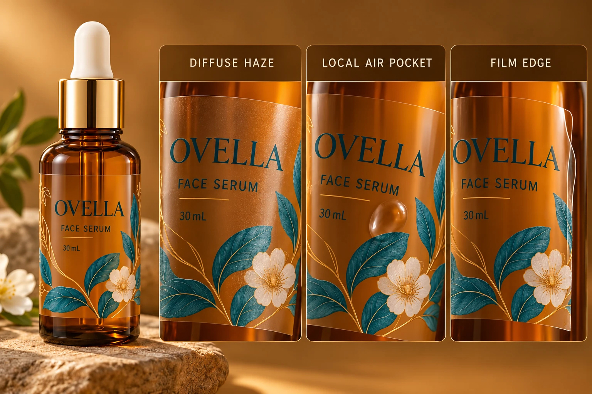

Give each observation a location and a name
Identify the bottle, label and sample. Mark whether the observation is spread across an area, concentrated in a particular pocket or visible mainly at the perimeter. Describe its appearance without assuming that the same word means the same thing to every reviewer.
Silvering is sometimes used informally for a fine, pale or textured appearance under a transparent construction. Record what the person actually sees rather than treating that label as a confirmed mechanism. If the supplier uses a specific definition, keep it with the technical response.
A distinct raised or visible pocket is a different observation from a fine diffuse texture. The label edge is another: a clear film still has a physical boundary, and its visibility needs an agreed appearance objective. An edge that can be seen in one lighting condition is not automatically the same event as localized trapped air.
The clear-film guide covers whether transparency suits the package. This narrower review establishes what appearance the brand is asking the supplier to evaluate.
Control the comparison before changing the construction
Use the same relevant bottle and fill background, viewing position and lighting when comparing samples. Record application and observation times under the supplier's guidance. A label photographed immediately on an empty clear bottle is not a controlled comparison with another photographed later on a filled amber bottle.
This does not require procurement to invent a laboratory method. It requires the parties to know which differences came from the pack, the viewing arrangement or the sample preparation. Where a formal measurement is needed, ask a competent technical party to define it.
Photograph both the complete pack and the marked feature. The whole-pack view explains the appearance in context. A closer view helps locate it. Retain the physical sample when further review is needed; a compressed phone image may not preserve enough detail to settle the question.
Ask for investigation rather than a stronger-adhesive slogan
The observation can prompt questions about the supplied construction, actual surface, preparation or application event. Those are candidate investigation routes. This article does not diagnose the cause from a picture or prescribe pressure, heat, solvents or a different adhesive.
Ask the converter which evidence would distinguish the relevant possibilities and which part of the construction is being evaluated. If a proposal changes the finish, adhesive and preparation together, have the reviewer explain the limitation: it may identify a more acceptable combination without isolating the original cause.
Use the quality-issue evidence guide to connect sample identity, observation and agreed next action. Keep that issue record separate from the brand's visual preference.
Make an optical review sheet
This editorial sheet supports an answerable appearance discussion. It does not set a universal no-label-look threshold.
| Record | Information | Question it answers |
|---|---|---|
| Sample identity | Construction, artwork, container and fill reference | Are reviewers discussing the same pack? |
| Feature | Diffuse texture, local pocket, perimeter or other description | What is actually being observed? |
| Location | Marked area and full-pack view | Where does it affect the design? |
| Preparation | Supplier-agreed application and timing | Is the comparison interpretable? |
| Viewing | Relevant lighting, angle and background | Were visual conditions comparable? |
| Response | Supplier investigation or revised proposal | What evidence could resolve the question? |
| Acceptance | Brand reference and bounded decision | What appearance is accepted for this pack? |
Complete identity and feature first. Standardize the relevant comparison conditions, collect context and detail images, then ask the supplier which follow-up evidence is needed. Record the brand's appearance decision separately from any confirmed technical explanation.
Hold a comparative conclusion when the packs or preparation are not comparable. Hold a cause claim when only a photograph is available. Neither gap requires declaring the entire transparent-label route unsuitable before it has been meaningfully assessed.

Accept that the visual objective can change
A hypothetical brand showing clear liquid through a near-transparent pack may place a high priority on optical appearance. It can justify a closer construction and applied-reference review before the order is released.
Another brand may use a larger opaque printed panel on a tinted bottle. A small visible unprinted perimeter might have less influence on its accepted presentation. That does not mean the construction has different mechanical performance. It means the appearance objective should match the actual design.
For custom cosmetic labels, send filled-pack references, sample IDs, label dimensions, quantity per design and the marked feature. Include preparation and viewing notes where known. Use the contact form to prepare the message; send images separately by email or WhatsApp. Begin with a feature both teams can identify.